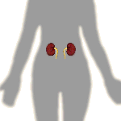
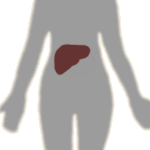
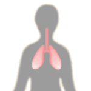

Kidneys and Metals Problem Set
Problem 6: Target organs for metals
For help to answer the question:
Why is the kidney often a target for toxic chemicals such as metals?
A. because toxicants enter the body through the stomach and intestines and are then transported to the kidney B. because the kidney has a very large surface area in direct contact with the blood C. because there is very high blood flow to the kidney and it can concentrate substances D. because the kidney cannot regenerate damaged cells
Tutorial
Kidneys|  The kidneys are a target for metals, meaning they are usually affected by metals. Even though they comprise only 0.5% of the total human body weight, they receive about 25% of the body's blood flow. The kidney's primary function in the body is to concentrate waste substances, but in the process they concentrate many other substances as well, including toxic metals. |
Liver
|  The liver is a target for metals for several reasons. If a person ingests a toxic metal, the first organ to be exposed to it, after the gut, is the liver. One of the liver's primary functions in the body is to remove and detoxify toxicants. The liver is loaded with enzymes designed to process and break down foreign chemicals. These enzymes process many oxidative reactions, so there are often reactive, potentially toxic chemicals present. |
Lungs
|  The lungs are a target for metals that enter by the inhalation route of exposure. The lungs have an enormous surface area and can have direct contact with air borne metals and is in close contact with the blood. All of the body's blood passes through the lungs many times per day, so any toxic substance in the lungs has many opportunities to enter the blood stream and travel to the rest of the body. |
Central Nervous System
| The other major target organ for metals is the brain and the rest of the central nervous system (CNS). The CNS is particularly vulnerable to damage by metals because the nerve cells cannot regenerate once they are damaged. Many toxic metals can cross the blood-brain barrier and either damage brain cells directly or disrupt the electrochemical balance that is needed for proper functioning of the nervous system. |


The Biology Project
The University of Arizona
Monday, February 22, 1999
Contact the Development Team
http://biology.arizona.edu
All contents copyright © 1999. All rights reserved.